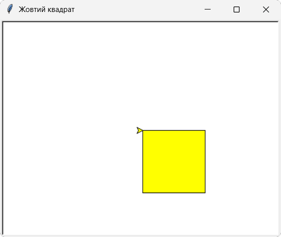
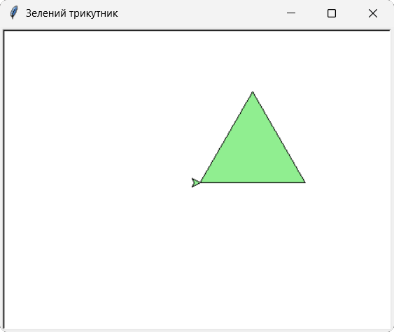
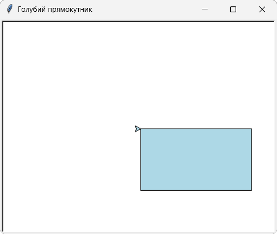

В цьому розділі ти дізнаєшся як створювати малюнки з простих геометричних фігур, складні візерунки та навчишся зафарбовувати замкнені області.
В попердній темі ми розглянули дві команди для роботи з олівцем - penup() та pendown() і в коді використовували деякі інші команди, які більш детально розглянемо в цій темі.
Методи керування олівцем:
| Метод | Опис |
|---|---|
| pencolor() | Змінює колір олівця, при цьому колір черепашки не змінюєжться. Наприклад: turtle.pencolor("purple") - задає фіолетовий колір олівця. |
| pensize() | Змінює товщину олівця тобто товщину лінії, яка буде намальована. За замовчуванням, товщина лінії рівна 1 пікселю. Наприклад: turtle.pensize(5) - встановить товщину лінії 5 пікселів. |
Методи зафарбовування фігур:
| Метод | Опис |
|---|---|
| fillcolor() | Встановлює колір заповнення. Наприклад: turtle.fillcolor("yellow") - встановить колір заливки фігури жовтим кольором. |
| begin_fill() | Команда повідомляє Python, коли саме потрібно почати зафарбовування фігури. Наприклад: turtle.begin_fill(). |
| end_fill() | Після виконання цієї команди фігура буде повністю зафарбована. Наприклад: turtle.end_fill(). |
| circle() |
Після виконання цієї команди буде намальоване коло з вказаним радіусом. Наприклад: turtle.circle(radius, extent=None, steps=None), де: radius - це радіус кола в пікселях (якщо значення додатнє - черепашка малює коло проти годинникової стрілки, ліворуч від себе, а якщо від'ємне - за годинниковою стрілкою праворуч від себе); extent - значення в градусах для малювання сектора кола, якщо значення не вказано воно рівне 360°; steps - указує кількість граней, у багатокутника, тобто команда: turtle.circle(50, steps=3) - намалює рівносторонній трикутник. |
Як правильно зафарбовуватифігури:
1. Намалюємо квадрат жовтого кольору.
import turtle
scr=turtle.Screen()
scr.title("Жовтий квадрат")
scr.setup(width=450, height=350)
t = turtle.Turtle()
t.fillcolor("yellow")
t.begin_fill()
for i in range(4):
t.forward(100)
t.right(90)
t.end_fill()
turtle.done()

2. Намалюємо рівносторонній трикутник зеленого кольору
import turtle
scr=turtle.Screen()
scr.title("Зелений трикутник")
scr.setup(width=450, height=350)
t = turtle.Turtle()
t.fillcolor("lightgreen")
t.begin_fill()
for i in range(3):
t.forward(120)
t.left(120)
t.end_fill()
turtle.done()

3. Намалюємо прямокутник колубого кольору.
import turtle
scr=turtle.Screen()
scr.title("Голубий прямокутник")
scr.setup(width=450, height=350)
t = turtle.Turtle()
t.fillcolor("lightblue")
t.begin_fill()
for i in range(2):
t.forward(180)
t.right(90)
t.forward(100)
t.right(90)
t.end_fill()
turtle.done()

Підказка: Щоб розрахувати кут повороту черепашки при малюванні багатокутників, потрібно число 360° розділити на кількість кутів багатокутника. Наприклад, при малюванні п'ятикутника потрібно 360° розділити на 5, отримаємо 72°. Виключенням є трикутник - тому що сума його кутів становить 180°, а не 360°
1. Створіть черепашку та перемістіть її без малювання у точку з координатами (-150, -50).
2. Намалюйте квадрат за допомогою координат з товщиною лінії 7 пікселів.
3. Намалюйте коло оранжевого кольору з товщиною лінії 3 пікселі.
4. Поверніть черепашку у центр екрана.
5. Змініть форму черепашки на "square".
6. Проаналізуйте отриманий результат і внесіть зміни до коду програми щоб зображення мало естетичний вигляд.
Початковий рівень
1. Створіть екран з рожевим фоном.
2. Намалюйте лінію довжиною 250 пікселів.
Середній рівень
1. Створіть черепашку у формі кола.
2. Намалюйте намалюйте рівносторонній шестикутник.
Достатній рівень
1. Намалюйте будинок із двох геометричних фігур - трикутника та прямокутника.
2. Використайте різні кольори для кожної фігури.
Високий рівень
1. Дізнайтесь в інтернет, що являє собою зірка Давида (Маген Давид).
2. Намалюйте її за допомогою виконавця "Черепашка" з товщиною ліній 10 пікселів і відповідного
кольору.